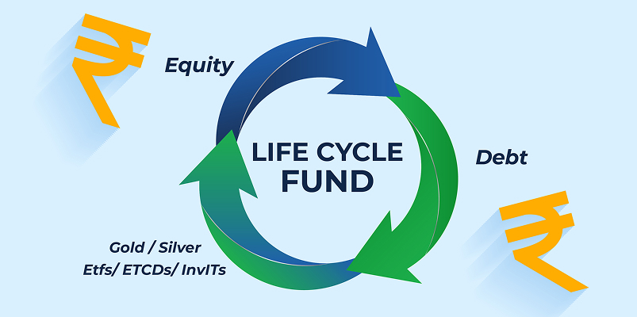

What are Life Cycle Funds and How Do They Work?

Whether you are saving for retirement or your child's education, managing investments over decades is genuinely hard. Most people either stay too aggressive for too long or turn overly cautious too early. Life Cycle Funds are built to fix that, and with SEBI officially introducing them as a recognised mutual fund category in February 2026, they are now a real option for anyone looking to invest in mutual funds online in a structured, goal-oriented way.
What is Life Cycle Fund?
A Life Cycle Fund is a mutual fund scheme with a fixed maturity date and a built-in mechanism to automatically shift your asset allocation as that date gets closer. When you are far from your goal, the fund leans heavily into equity for growth. As you inch closer, it gradually moves into debt to protect what you have built.
The maturity year is always part of the fund's name, so a "Life Cycle Fund 2050" is designed for someone with a 2050 goal. The fund manager does the rebalancing for you, year after year, without you lifting a finger.
SEBI introduced this category to replace Solution-Oriented Funds (retirement and children's funds), which had static allocations that did not adjust with the investor's changing life stage.
SEBI's Asset Allocation Framework
SEBI has defined specific allocation bands based on years remaining to maturity:
| Years to Maturity | Equity | Debt | Gold/Silver ETFs, ETCDs, InvITs |
|---|---|---|---|
| 15 to 30 years | 65% to 95% | Remaining corpus | Up to 10% |
| 10 to 15 years | 65% to 80% | Remaining corpus | Up to 10% |
| 5 to 10 years | 50% to 65% | Remaining corpus | Up to 10% |
| 3 to 5 years | 35% to 50% | Remaining corpus | Up to 10% |
| 1 to 3 years | 20% to 35% | Remaining corpus | Up to 10% |
| Less than 1 year | 5% to 20% | Remaining corpus | Up to 10% |
Debt investments are restricted to AA-rated instruments and above. For funds within 5 years of maturity, equity arbitrage exposure of up to 50% is permitted to maintain equity fund taxation benefits.
Key Features of Life Cycle Funds
-
Tenures available:
Funds are available in 5-year intervals, from 5 to 30 years. -
Exit load:
SEBI has structured exit loads to encourage long-term holding: 3% in Year 1, 2% in Year 2, and 1% in Year 3. No exit load after that. -
Quality debt mandate:
All debt holdings must be rated AA and above, with maturity not exceeding the fund's target date. This keeps the portfolio safe when it matters most. -
Smooth transition at maturity:
When a fund has less than one year remaining, it can be merged into the nearest Life Cycle Fund with unitholder consent, so your money keeps working rather than being paid out abruptly.
Who Should Consider Life Cycle Funds?
Life Cycle Funds work best for investors with a clear, time-bound goal. If you are 30 today and plan to retire at 60, a Life Cycle Fund 2055 gives you three decades of equity-driven growth followed by a steady de-risking. If you are building a corpus for your child's college by 2042, a matching Life Cycle Fund handles the entire journey.
The biggest advantage is not just the diversification across equity, debt, gold, and InvITs. It is the discipline that the structure enforces. You do not have to remember to rebalance. You do not have to guess when to shift from equity to debt. The fund's design takes care of it.
Conclusion
Life Cycle Funds are a genuinely practical addition to India's mutual fund space. For anyone who wants a goal-linked investment that manages its own risk over time, these funds remove a lot of guesswork. If you are looking to explore top mutual funds or want guidance, you can open a free demat account through Integrated and build a portfolio around your goals.
Disclaimer - This blog is for informational and educational purposes only and should not be considered investment advice, a recommendation, or a solicitation to buy or sell any mutual fund or financial product. Mutual fund investments are subject to market risks. The fund names mentioned are purely for illustrative purposes and do not represent any specific scheme.